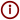

Zorgkompas Frankrijk
Financiële impact simulator (Tarieven 2025)
Mutuelle 
Geen mutuelle (Alleen Sécu)
100% (Basis)
200% (Gemiddeld)
300% (Comfort)
400% (Excellent)
Situatie & Opties
ALD Status
Huisarts
Privé
Indicatie eigen bijdrage:
€ 0,00
Excl. maandelijkse premies
Kies een zorgsituatie
-- Selecteer een scenario --